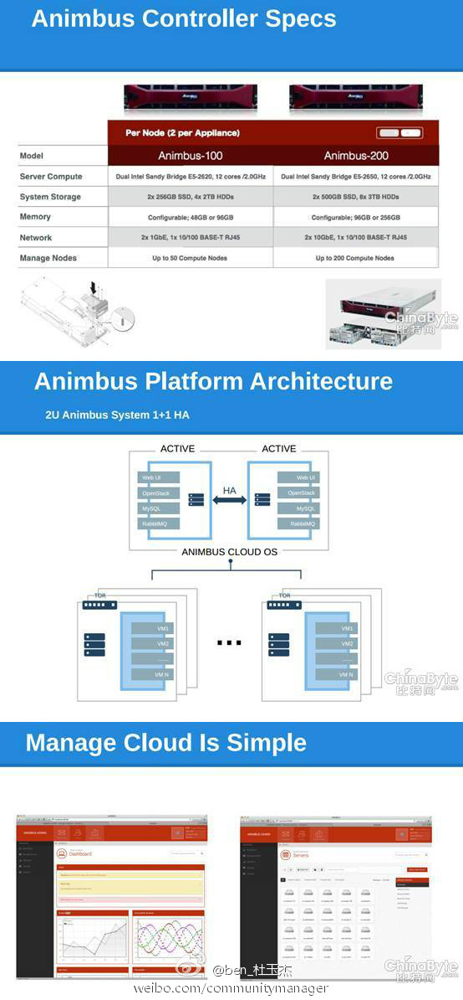

//@TankerV: 网络是云技术的硬件基础，硬件推动应用发展，应用拉动硬件提升，国内的网络硬件发展太慢，我们的芯片有时是在等市场，韩国则是迅速发展网络硬件，这种差异很可能造成中国互联网应用发展落后别人。//@盛科张卫峰: 这么重大的新闻，今天才看到，虽然晚了点，也要转发一下。中国的Nebula啊@ben_杜玉杰:#OpenStack# 大家都说越来越感觉到云计算中最关键的是网络，网络搞不定、不灵活，会引起很多问题，甚至产品都不能当作完善的产品发布，所以狠下心来把技术做扎实，现在终于可以向关心我们的朋友们汇报一下了，也欢迎社区的朋友交流合作，小伙伴们你们辛苦了～网页链接 
 网页链接
网页链接